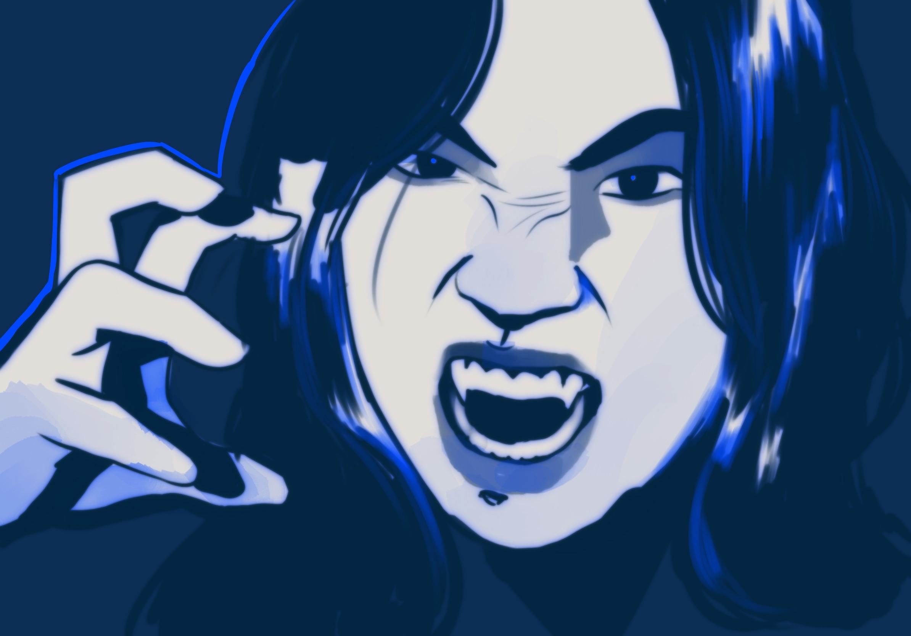

Everything About Me!

|
More Lists For Fun êîå’û. .’ûê¶Ø ✦ My Top "Muses"
|
|---|
✦ Breaking News! ✦This just in, our reporters have spotted a sighting of the cryptic that people have come to name as "Charlotte" has been sighted near Queens, Bayside. This creature walks around with a hunched back, and usually gripping a phone in one hand. It's walking pattern is strange, so be wary while walking down the sidewalk- as this creature might just sneak up behind you... then quickly debate whether or not to pass you, then ultimately decide to walk past a moment too late and push past rather than sneak past. A word from our sponsors!
|